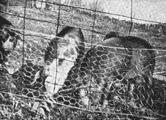
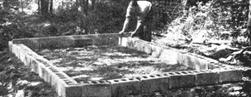
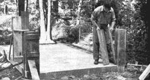
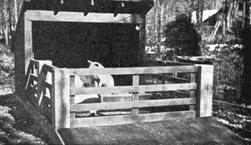

Ham, Bacon, Pork, Lard
By the Mother Earth News editors
March/April 1970
"You can breed the pigs and buy the corn and get on; You can raise the corn and buy the pigs and get on; If you buy the corn and buy the pigs to feed, you haven't got a chance; But if you breed the pigs and raise the corn you'll make money." -Louis Bromfield EVEN though this pessimistic little poem's about raising pigs commercially, it has a point that the backyard farmer shouldn't forget: The really profitable way to raise your own pork is to raise and fatten your pigs chiefly with surplus garden products, table scraps, home-grown corn.
The first year we started our plan, we raised two pigs. Because we didn't have many surplus vegetables, we bought about $35 worth of grain per pig. We paid $12.50 for inoculated 7 week-old pigs in April, had them slaughtered in December when they weighed 285 pounds. The dressed weight (per pig) was 230 pounds. In short, our pork cost 22 cents a pound. Last year it cost around 18 cents.
From this experience we learned a few important points: For a family of three or four one pig will give quite a bit of meat. Even a 200 pound pig (live weight) will give about 55 pounds of hams and shoulder, 40 pounds of bacon and loin, plus lard, sausage, pigs feet, etc. Two pigs are sufficient for a family of 6 to 8.
With only three in our family we made a mistake keeping our pigs until they weighed 300 pounds. After pigs go over 225 pounds their ratio of weight gained to food consumed drops.
We found that if you buy a 7 to 10 weeks old pig, innoculated, properly weaned fed and cared for, you shouldn't have any trouble raising it. With only 3 in the family, the amount of table scraps and surplus garden vegetables we had was discouragingly small when fed to two pigs. Incidentally, a pig will do well even if it doesn't get much grain. To keep feed bills down, you should plant a patch of corn or supply extra food scraps or garden or orchard produce. In fact, good pasture, fenced into three lots for rotating will supply 10 to 15 percent of the total food for a couple of pigs.
A single pig, unlike a single goat, doesn't get lonely.
From weaning time (6 to 8 weeks) a pig should put on about a pound a day. If fed grain entirely it will eat nearly 1/2 ton from April to December. But with pasture and surplus produce - vegetables, corn stalks, fruit, skim milk, acorns, and table scraps, even 200 pounds of grain will produce a good sized pig.
The backyard farmer shouldn't try to keep a sow, breed her, and produce young pigs. This requires a lot of time, trouble, experience and feed.
A young pig (or two) should be bought in the Spring - a March or April born pig is best. Such an animal costs at 6 to 8 weeks of age $5 to $12. Buy either a young sow pig or a barrow (castrated male). Be sure the pig is inoculated against cholera. This usually costs 50 cents. The young pig should also be wormed before you buy it.
It has often been pointed out that the day you buy your pig is the day you'll make or lose the most money. In short, buy from a good breeder or farmer with clean, disease-free stock. Be careful you don't get a runt. Choose a young pig that's long - a chunky one will make too much lard. The breed is not important - all breeds have been developed to produce meat.
Easiest Way to Feed
The simplest way to feed a pig is to provide grain, (corn-on-cob, wheat or barley), a protein supplement (alfalfa leaf left from the hay fed goats for example), and a mineral mixture or a complete hog ration in separate compartments of an automatic hog feeder. This feeder plus an automatic waterer cuts chore time to the bone. Automatic feeders, which let animals eat as much and whenever they like, work best of all with pigs. No matter how much food you put before a pig it will eat only until full - never overeat.
Feeders and waterers are sold by Sears and Montgomery Ward.
Feed garbage, surplus garden produce etc. in a trough. This you can easily make, especially if you buy iron trough ends. Save garbage in separate can and keep free from paper, soap, glass, dishwater, etc. Don't feed garbage older than 3 days.
Housing
Housing for a pig or two from April to December can be of the simplest. The standard portable A-type hog house is satisfactory and can be bought knock-down for around $35. However, the backyard farmer probably hasn't enough land to require a portable house. A simple shed structure, 8 x 6 feet, 5 feet high in front, 3 in the rear, is most satisfactory. The front is open and the sun, which is the best disinfectant of all, can penetrate to the rear of the house. The roof is tar-paper, the rest of the shed is made of wood, including the floor which is set well off the ground to keep the pigs dry. In the fall we keep the floor bedded with straw.
New Method of Raising Pigs
Of special interest to the backyard farmer are the experiments sponsored by the Portland Cement Association, Chicago, Illinois. These experiments have to do with the confinement system of raising pigs on concrete. Like the battery-broiler system, instead of permitting animals to range, all food is brought to the pigs. Less than 15 square feet of pen is allowed per pig, obviously a system which requires so little land is of interest to the backyard farmer.
Inasmuch as pigs spend their whole life on concrete this makes possible maximum sanitation. Concrete floors are swept or flushed with a garden hose daily. A pit provides a sanitary, easy method of holding manure until it can be spread over the garden.
Confinement on cement eliminates "rooting" and racing about. This results in unbelievably fast growth. John Hendricks, who is given credit for developing this method of growing hogs, reports average growth of a hog to be:
Age Weight
67 days 82 lbs.
132 days 195 lbs.
200 days 325 lbs.
The photos at below are our adaptation of the commercial hog raisers' confinement-on-concrete system which we have scaled down to a size suitable for 1 to 4 pigs. The confinement pen has worked out fine.
Watering is done automatically by attaching a Montgomery Ward double-drinking cup to the bottom of a barrel. This barrel can be fllled once or twice weekly with a garden hose.
Slaughtering
There is no need for the novice to do his own slaughtering, Your feed dealer will put you in touch with a man who will dress your pigs, smoke the hams, bacon, make sausage, hog's head cheese, liverwurst.
Or you can have your pigs slaughtered and dressed and do your own curing and smoking.
And boy - wait until you taste your own bacon and ham smoked country style - and that wonderful, honest-to-goodness all pork sausage - and fresh roast pork! If yours is as good as ours turned out you'll say you've never tasted any so delicious ever before.
With a proper set-up, fattening a pig will return more for the time spent than most any other project.
Suggested Reading:
How to Raise a Pig Without Buying Feed,
35 cents. Homestead Pork Production,
$1.25. Feeds and Feeding,
1,050 pages, $7.00. Tells how to mix feed for all farm animals.
|
 Our 1/4 ton of pork! When we bought young pigs the chicken-wire netting was necessary to keep pigs in. Incidentally, have you heard the old farmer's definition of a good fence: ""Hog tight at the bottom - goat high - and sturdy enough to hold a bull"". |
 Six-week old pigs, already weaned, can be bought by mail. By feeding surplus garden vegetables, table scraps, and some grain they'll grow to 175-200 pounds in 20 weeks. |
 Simple hog feed trough for garbage. Note braces which give each pig a chance to eat. Wide end boards keep pigs from upsetting trough. |
|
 |
 |
 |